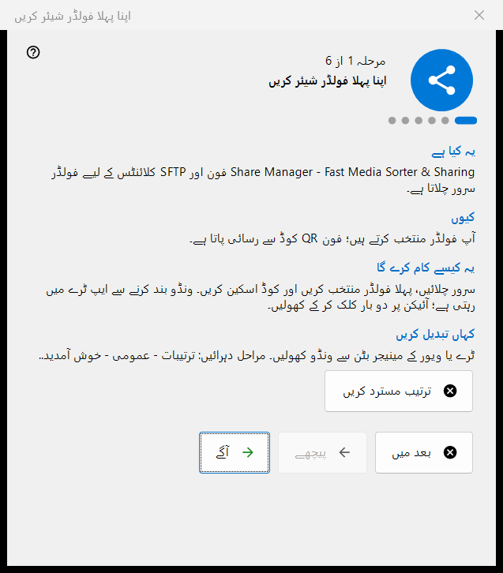
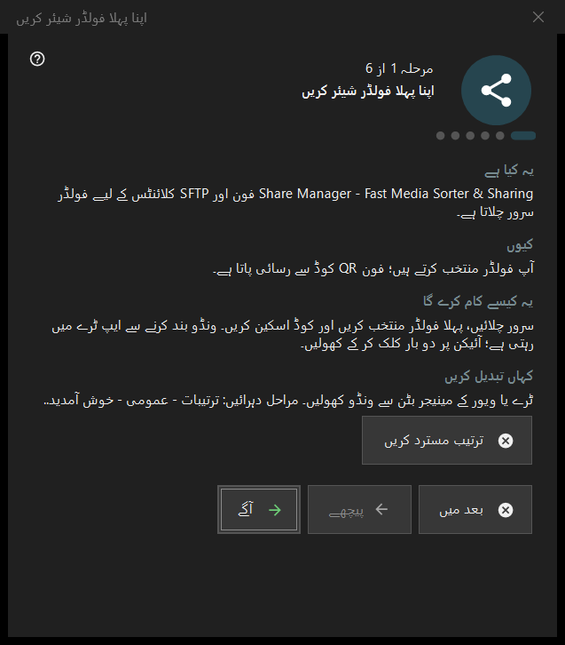

اپنا پہلا فولڈر شیئر کریں
یہ کس مقصد کے لیے ہے
چھ مراحل کا وزرڈ جو آپ کو صفر سے فون کو پیش کیے جانے والے فولڈر تک لے جاتا ہے: یہ سرور آن کرتا ہے، پہلا فولڈر چنتا ہے، پورٹ اور بنیادی اختیارات طے کرتا ہے اور حالت کی جانچ پر ختم ہوتا ہے۔ یہ Share Manager کے پہلے آغاز پر کھلتا ہے اور ترتیبات سے دوبارہ چلایا جا سکتا ہے۔


اس ترتیب میں
- تعارف پڑھیں اور آگے دبائیں۔
- سرور آن کریں صفحے پر بٹن ایک بار دبائیں اور ایڈمنسٹریٹر کی درخواست کی تصدیق کریں۔
- پہلا فولڈر اور اس کے اختیارات چنیں۔
- پورٹ رکھیں یا بدلیں۔
- زبان، اسٹارٹ اپ اور مقامی نیٹ ورک کے اختیارات طے کریں۔
- آخری صفحے پر حالت دیکھیں، QR کوڈ کھولیں اور ختم دبائیں۔
عناصر
مراحل اور بٹن
نچلی پٹی میں مرحلہ N از 6 دکھائی دیتا ہے۔ پیچھے اور آگے صفحات کے درمیان چلتے ہیں، آخری صفحے پر آگے ختم بن جاتا ہے، بعد میں وزرڈ بند کرتا ہے اور جو آپ پہلے تصدیق کر چکے ہیں اسے رکھتا ہے، اور ترتیب مسترد کریں اسے ہمیشہ کے لیے بند کرتا ہے۔ ہر صفحے پر چار مختصر حصے ہیں: یہ کیا ہے، کیوں، یہ کیسے کام کرے گا اور کہاں تبدیل کریں۔
سرور آن کریں
اس مرحلے تک سرور بند رہتا ہے۔ فعال کرنے والا بٹن ایک بار ایڈمنسٹریٹر حقوق مانگتا ہے اور پروگرام کے لیے Windows فائر وال کا ایک اصول شامل کرتا ہے۔ درخواست منسوخ کرنے پر سرور بند رہتا ہے اور آپ دوبارہ کوشش کر سکتے ہیں؛ اگر وہ پہلے سے آن ہو تو صفحہ بتاتا ہے کہ مزید اجازت کی ضرورت نہیں۔
پہلا فولڈر
ایک فولڈر چنیں، پھر اس کا نام، پروفائل اور رسائی۔ اب پہلا وسیلہ شامل کریں.. وسائل کا وزرڈ کھولتا ہے۔ آگے بڑھنے کے لیے کم از کم ایک فولڈر چاہیے۔ ترتیبات سرور کو بھیجی جاتی ہیں، اور فولڈر مرکزی ونڈو کی فہرست میں قابلِ ترمیم رہتے ہیں۔
پورٹ
سسٹم منتخب کرے ایک بار پورٹ تفویض کرکے اسے رکھتا ہے؛ مقررہ پورٹ: آپ کو اپنا نمبر لکھنے دیتا ہے، مثلاً روٹر پر پورٹ فارورڈنگ کے لیے۔ یہ نمبر ہر QR کوڈ اور .fmscfg فائل میں لکھا جاتا ہے، اس لیے بعد میں بدلنے سے پہلے دیے جا چکے کوڈ کام کرنا چھوڑ دیتے ہیں۔ فائر وال کا اصول پروگرام کا ہے، پورٹ کا نہیں۔
بنیادی ترتیبات
انٹرفیس کی زبان، Windows لاگ اِن پر شروع کریں، اسٹارٹ اپ پر مینیجر ونڈو کھولیں اور صرف مقامی نیٹ ورک (انٹرنیٹ سے رسائی نہیں)۔ مقامی نیٹ ورک موڈ پورٹ فارورڈنگ اور انٹرنیٹ کا پتہ بند کر دیتا ہے۔ Store ورژن کا اسٹارٹ اپ اختیار Windows کی ترتیبات میں سنبھالا جاتا ہے۔
اختتام
آخری صفحہ سرور اور چنے ہوئے فولڈرز کی جانچ کرکے نتیجہ دکھاتا ہے؛ سبز حالت کا مطلب ہے کہ فولڈر کی رسائی کے ساتھ کوئی شیئر واقعی چل رہا ہے۔ فون کے لیے QR کوڈ کوڈ کھولتا ہے اور تازہ کریں جانچ دہراتا ہے۔ اگر حالت توجہ مانگے تو وجہ مرکزی ونڈو میں ٹھیک کریں یا فولڈر والے مرحلے پر واپس جائیں۔
وزرڈ دوبارہ چلانا
ترتیبات - عمومی - خوش آمدید.. ایک مینو کھولتا ہے جس میں فولڈر کی ترتیب دوبارہ کریں ہے، اور وہ اسی وزرڈ کو دوبارہ کھولتا ہے۔
مینیجر کی ترتیبات · SFTP اشتراک کی ترتیبات · ایکسچینج سرور کی ترتیبات